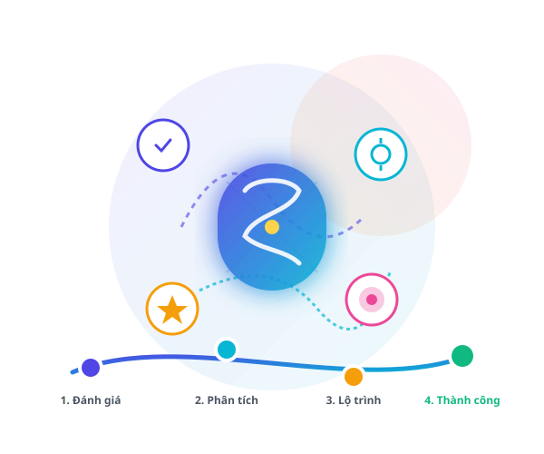

Hiểu Điểm Mạnh
Xác định rõ ràng những năng khiếu tư duy bẩm sinh và thế mạnh nhận thức vượt trội mà bạn có thể chưa từng nhận ra để phát huy tối đa.
Hiểu rõ tư duy là chìa khóa mở ra tiềm năng học tập vô hạn. MindPath cung cấp bộ công cụ đo lường năng lực nhận thức đa chiều chuẩn hóa, giúp bạn xác định chính xác điểm mạnh cốt lõi và nhận lộ trình thích ứng tối ưu theo năng lực cá nhân.
Người học đã hoàn thành
Cải thiện tốc độ học tập
Đo lường năng lực tư duy

Không chỉ là một bài kiểm tra đơn thuần, MindPath mang lại bức tranh toàn diện và phương pháp rèn luyện khoa học nhất cho trí tuệ của bạn.
Xác định rõ ràng những năng khiếu tư duy bẩm sinh và thế mạnh nhận thức vượt trội mà bạn có thể chưa từng nhận ra để phát huy tối đa.
Chỉ ra chính xác các điểm nghẽn nhận thức, những định kiến tư duy hay kỹ năng phân tích còn hạn chế khiến bạn học tập chưa đạt hiệu suất mong muốn.
Không dùng chung một giáo trình rập khuôn. Hệ thống gợi ý chuỗi bài học, tài liệu và bài tập tình huống tương thích với tốc độ tiếp thu của bạn.
Liên tục cập nhật chỉ số tăng trưởng tư duy qua các cột mốc rèn luyện định kỳ, giúp bạn nhìn thấy rõ sự biến chuyển trong cách tư duy và giải quyết vấn đề.
Bộ bài kiểm tra được thiết kế theo các tình huống mô phỏng thực tiễn, giúp đo lường chính xác từng chiều kích trí tuệ.
Đo lường năng lực phân tích tính chân thực của dữ liệu, nhận diện ngụy biện và đưa ra phán đoán độc lập dựa trên luận cứ chặt chẽ.
Làm bài đánh giáKhảo sát năng lực tư duy phi tuyến tính, khả năng liên tưởng phong phú và sáng tạo các giải pháp độc đáo khi đối mặt với thách thức mới.
Làm bài đánh giáKiểm tra khả năng phân rã bài toán, suy luận theo chuỗi nguyên nhân - hệ quả và thiết lập cấu trúc lập luận nhất quán, chính xác.
Làm bài đánh giáĐánh giá năng lực xử lý tình huống thực tế, ưu tiên giải pháp tối ưu trong điều kiện giới hạn về thời gian, nguồn lực và thông tin.
Làm bài đánh giáMỗi nhóm đối tượng đối mặt với những thách thức học tập riêng biệt. Dưới đây là 3 khung lộ trình tiêu biểu được kiến tạo bởi MindPath.
Tập trung kích hoạt năng lực học tập chủ động và phương pháp tiếp thu kiến thức khoa học, giảm phụ thuộc vào việc học vẹt.
Nâng cao năng lực phản biện học thuật, phân tích dữ liệu nghiên cứu và thuyết trình lập luận có sức thuyết phục cao.
Trang bị kỹ năng giải quyết sự cố thực chiến, tư duy hệ thống và đưa ra quyết định nhanh chóng trong môi trường kinh doanh áp lực cao.
Những chuyển biến rõ nét trong cách tư duy và kết quả học tập từ những người đã trải nghiệm nền tảng.
"Trước đây con trai tôi rất sợ các môn học cần tư duy logic và thường học theo kiểu thuộc lòng máy móc. Nhờ bài đánh giá năng lực tại MindPath, gia đình tôi mới hiểu cháu có thế mạnh về tư duy không gian và hình ảnh. Sau 4 tháng học theo lộ trình cá nhân hóa, điểm số và sự tự tin của cháu đã tiến bộ vượt bậc."
"Bài khảo sát tư duy phản biện của MindPath thực sự mở mang cho mình. Nó chỉ ra mình thường xuyên mắc lỗi ngụy biện dựa trên cảm xúc khi làm tiểu luận. Lộ trình học 4 tháng đã giúp mình cải thiện kỹ năng nghiên cứu, phản biện và bảo vệ khóa luận xuất sắc trước hội đồng."
"Làm việc trong mảng phân tích dữ liệu, kỹ năng giải quyết vấn đề và tư duy logic là sống còn. Lộ trình dành cho người đi làm của MindPath rất thực tế, bài tập gắn liền với các tình huống kinh doanh phức tạp. Tôi áp dụng được ngay vào công việc quản trị dự án hàng ngày."
Điền thông tin dưới đây để nhận ngay bài đánh giá tư duy đa chiều và bản phân tích kết quả hoàn toàn miễn phí.